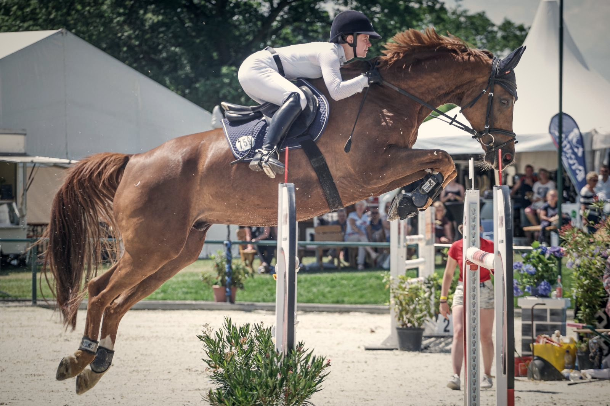
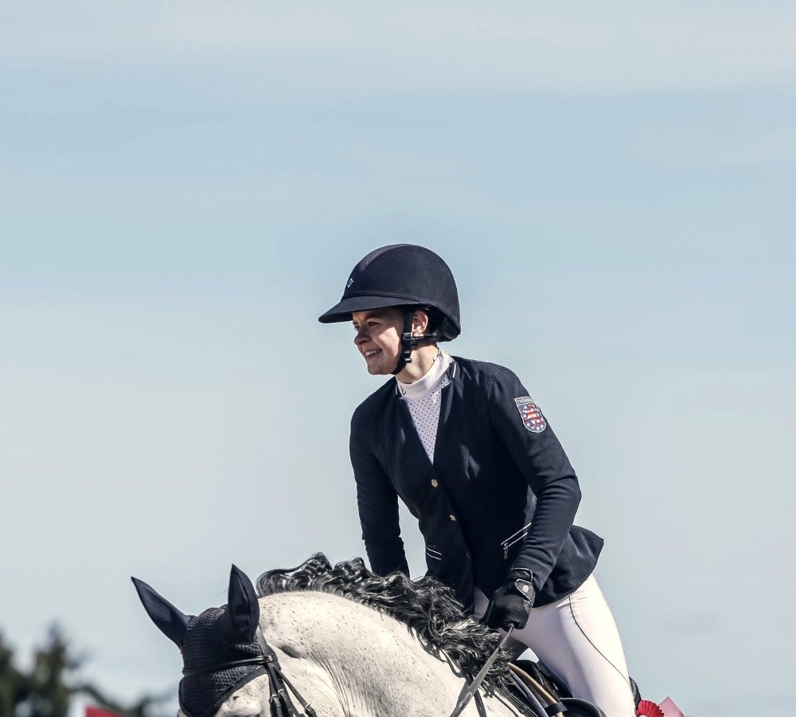

Disziplin ist eine Entscheidung.
Studio Gerth ist aus einer einfachen Beobachtung entstanden: Die meisten Websites scheitern nicht am Start — sie scheitern daran, dass sich danach niemand mehr kümmert.
Vom Springsattel zur Sorgfalt im Code.
Ich bin Anna Lena Gerth — Wirtschaftsinformatikerin und seit über zehn Jahren Springreiterin im Leistungssport. Beides prägt, wie dieses Studio arbeitet: Im Sport gewinnt nicht, wer am lautesten auftritt, sondern wer jeden Tag präzise trainiert. Genau so baue ich Websites.
Studio Gerth ist bewusst kein Agentur-Apparat — ich arbeite allein, mit einem klaren Fokus: kleine, regionale Betriebe aus Handwerk, Gastronomie, Handel und Dienstleistung. Menschen, die gute Arbeit leisten, aber online noch unsichtbar sind. Genau da will ich helfen.
- Arbeitsweise Bewusst solo — ein Gespräch, eine Ansprechperson, keine Warteschleifen
- Ausbildung B.Sc. Wirtschaftsinformatik (dual, DHGE) · Master-Studium Wirtschaftsinformatik, Schwerpunkt E-Commerce (FSU Jena)
- Berufserfahrung ERP-Expertin Logistik bei der Jenoptik AG — Integration und eigenständige Betreuung unternehmenskritischer Systeme
- Haltung Springreiterin auf Landesniveau, Trainerin für Nachwuchsreiter — Disziplin als tägliche Praxis, nicht als Schlagwort
- Eigene Projekte Entwickelt in Eigenregie eine App (Flutter) für pferdefreundliches Training — auch privat wird gebaut, nicht nur beraten
- Sprachen Deutsch (Muttersprache), Englisch (C1), Französisch (B1)
Drei Worte, an denen Sie mich messen dürfen.
Gut genug ist nicht mein Maßstab. Jede Website verlässt das Studio erst, wenn ich sie selbst mit Stolz zeigen würde — diese hier eingeschlossen.
Probleme beschreiben kann jeder. Ich komme mit Vorschlägen, nicht mit Vorbehalten — und sage klar, was etwas kostet und was es bringt.
Termine halten. Updates einspielen. Berichte schreiben. Die unspektakuläre Arbeit, Woche für Woche — sie ist der Grund, warum meine Kunden bleiben.
Gelernt im Sport. Gelebt im Studio.


Über zehn Jahre Springreiten auf Landesniveau, seit Jahren auch als Trainerin für Nachwuchsreiter. Was das mit Websites zu tun hat? Auf dem Turnierplatz zählt nicht der eine gute Tag, sondern die Vorbereitung an jedem Tag davor. Genauso arbeite ich für meine Kundinnen und Kunden.
Lernen wir uns kennen.
Erzählen Sie mir, wo Ihr Betrieb steht — ich erzähle Ihnen, wie Ihre Website dorthin kommt, wo Sie hinwollen.